Media
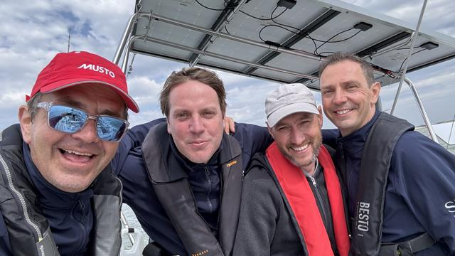
1Media galerij etappe 139 foto's 2Media galerij etappe 256 foto's
2Media galerij etappe 256 foto's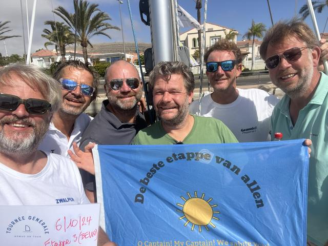
3Media galerij etappe 331 foto's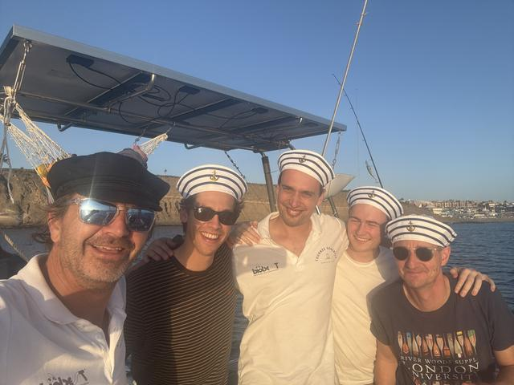
4Media galerij etappe 423 foto's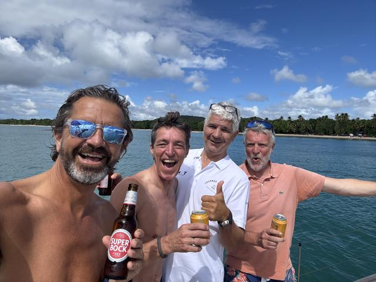
5Media galerij etappe 519 foto's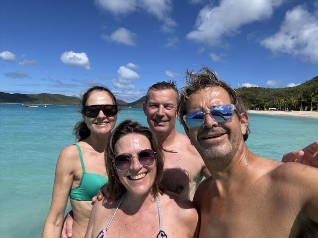
6Media galerij etappe 634 foto's 7Media galerij etappe 741 foto's
7Media galerij etappe 741 foto's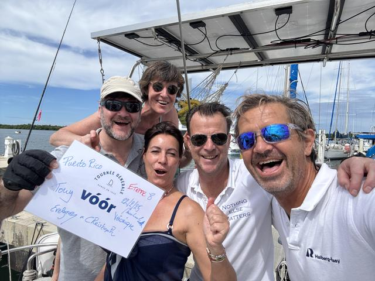
8Media galerij etappe 833 foto's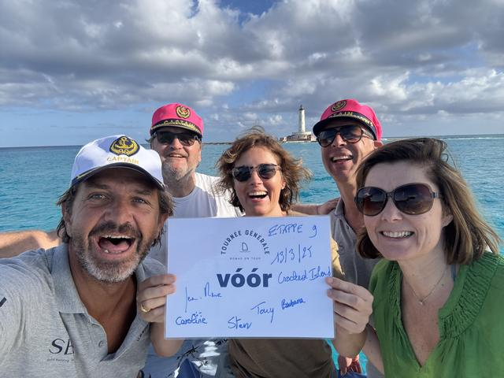
9Media galerij etappe 960 foto's 9.5Media galerij etappe 9.539 foto's
9.5Media galerij etappe 9.539 foto's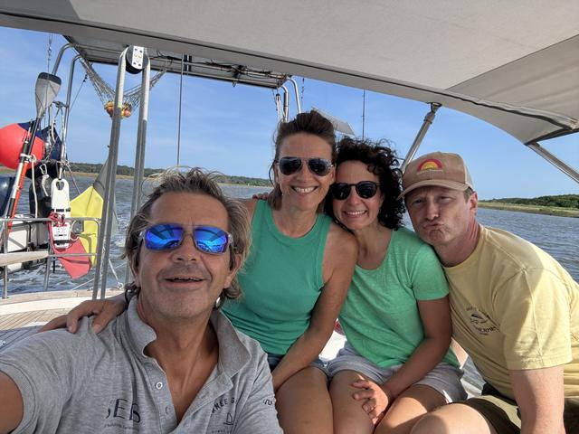
10Media galerij etappe 1070 foto's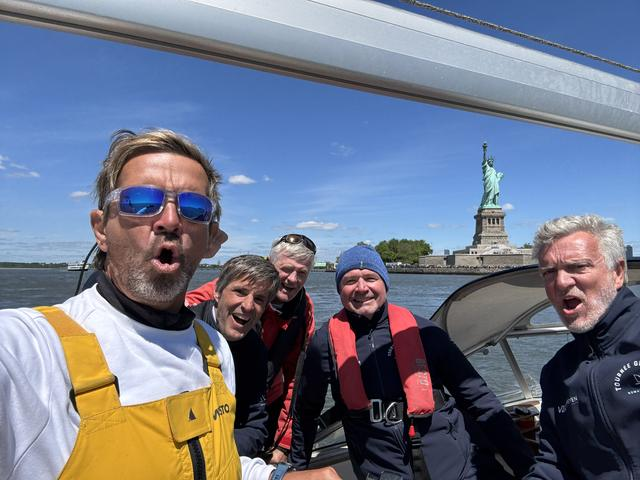
11Media galerij etappe 1136 foto's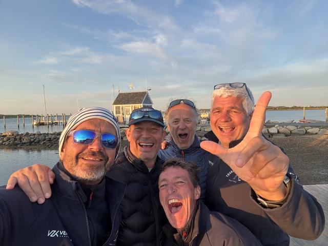
12Media galerij etappe 1258 foto's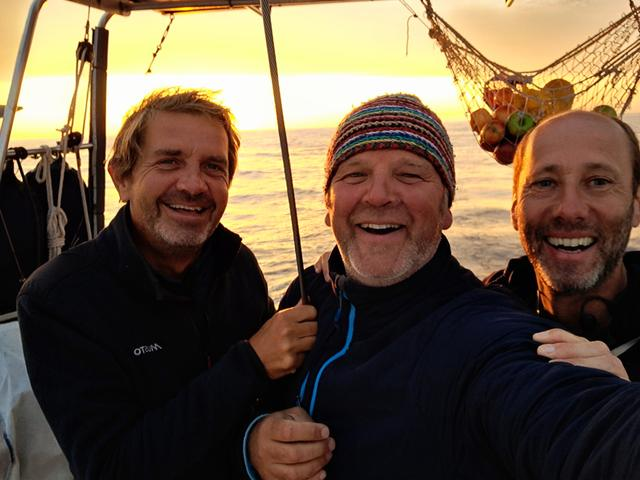
13Media galerij etappe 1336 foto's 14Media galerij etappe 1479 foto's
14Media galerij etappe 1479 foto's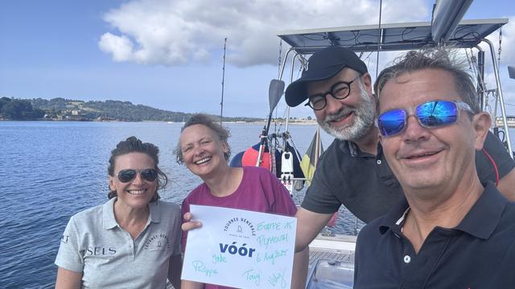
15Media galerij etappe 1580 foto's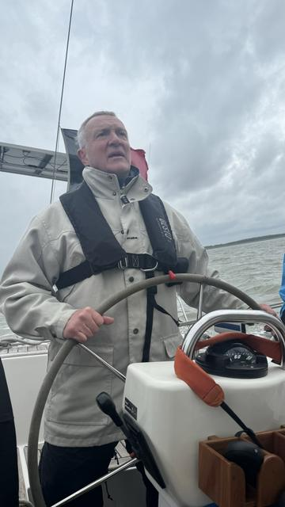
20242024 oefentripjes86 foto's